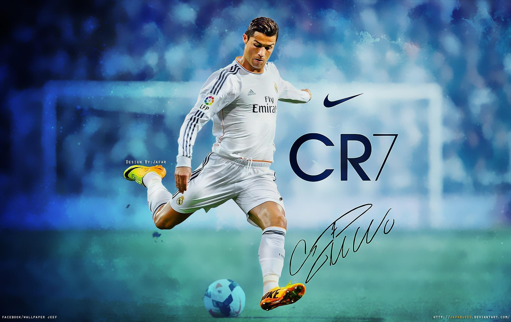
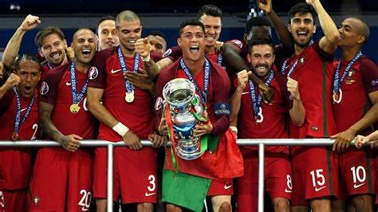
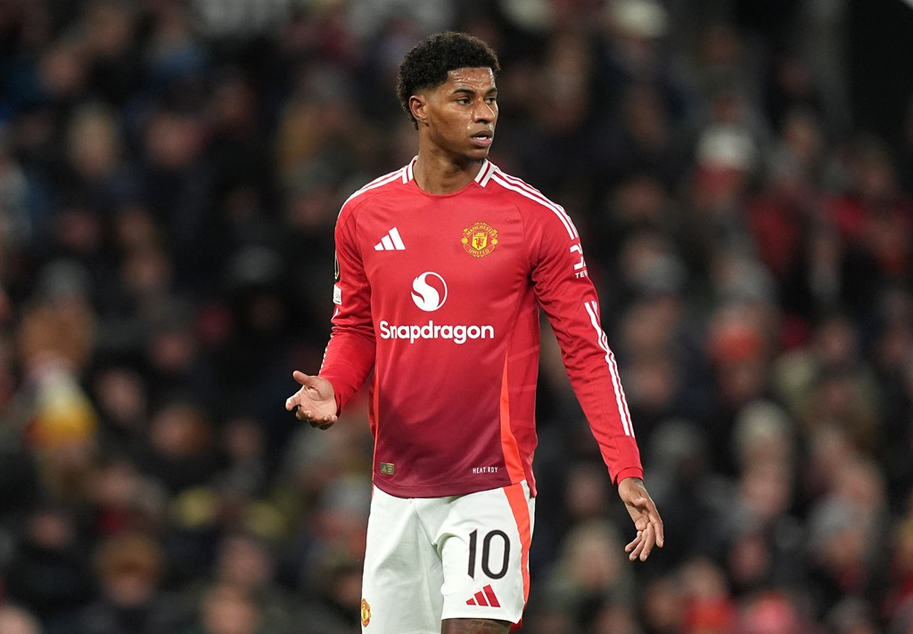
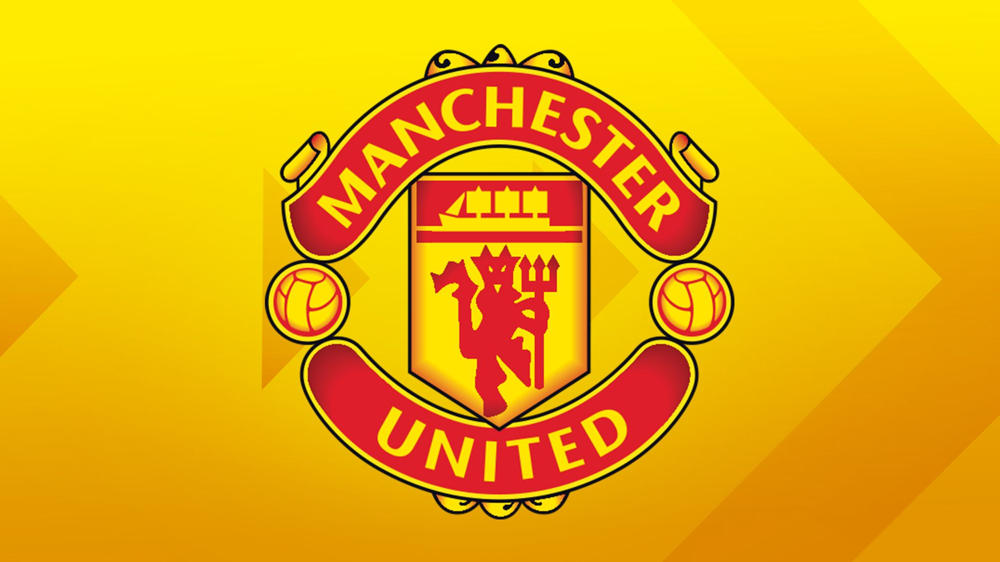

Three years after conquering European soccer for the first time,
Portugal and Cristiano Ronaldo are celebrating another international title.
Portugal won the inaugural UEFA Nations League tournament on Sunday,
beating the Netherlands 1-0 to lift its first trophy since the 2016 European Championship.
"It's a great achievement, indisputable, " Portugal coach Fernando Santos said.
"These victories will be part of Portuguese soccer forever.
Ronaldo, coming off a hat trick in the semifinals, lifted the winners'
trophy but wasn't much of a factor in Sunday's final, with the only goal
coming from midfielder Gonçalo Guedes early in the second half at the Estádio do Dragão.
"Things have been going well for Portugal in recent years," Ronaldo said.
"The national team has won some important titles."
The hosts' victory in UEFA's newest competition, created to give national
teams more meaningful matches than just friendlies,
denied the Netherlands its first trophy since the 1988 European Championship.
The revamped Dutch team was seeking some redemption after failing to qualify
for the 2018 World Cup and the 2016 European Championship.
After the match, the Portuguese squad went to a public plaza in Porto where several thousand fans celebrated the win.
Santos, Ronaldo and other players addressed the fans from a balcony.

"We couldn't have done this without you," Ronaldo told fans.
Ronaldo couldn't do much against Dutch defender Virgil van Dijk in the matchup of likely
contenders for the player of the year award, but Guedes couldn't be stopped when he hit
a powerful right-footed shot from outside the area in the 60th minute.
Guedes started the build-up to the goal with a pass to Bernardo Silva, receiving the ball back
at the top of the area and firing a firm low shot past Dutch goalkeeper Jasper Cillessen, who touched the ball but couldn't parry it away.
"It was a hard shot," said Cillessen, who was making his 50th appearance with the Netherlands. "I saw it late."
The Dutch had impressed in the group stage of the Nations League by eliminating the last
two World Cup champions — France and Germany. It made it to the final after beating England 3-1 in the semifinal on Thursday.
"At the start of this tournament I don't think anyone would have believed us if we'd said we'd reach the final,"
said Van Dijk, who hadn't faced Ronaldo since the 2018 Champions League final between Liverpool and Real Madrid.
"We've made a lot of progress. We have to be very proud of ourselves. Now disappointment
is in our heads but we have to keep heads up. It's been a good season."
Portugal, which eliminated Italy and Poland in the group stage and defeated Switzerland in the semifinals,
had lost the 2004 European Championship final at home to Greece, but this time it got to
celebrate the title in front of its fans after a scrappy match in Porto.

The hosts were in control most of the match but struggled to get past the stout Dutch defense led by Van Dijk and Matthijs de Ligt.
Ronaldo's best chance was a header that went straight to Cillessen's hands about 30 minutes into the first half.
The Dutch improved after halftime but couldn't create many significant scoring chances,
with Memphis Depay coming closest with a 65th-minute header saved by goalkeeper Rui Patricio.
The Netherlands kept pressing but Portugal was able to hold on to clinch the first Nations League title.
"It was a bit better in the second half, and then the goal was (scored) and it became even more difficult
because they are masters in defending when they are ahead," Netherlands manager Ronald Koeman said. "We were not good enough tonight."
Santos made changes from the team that defeated Switzerland 3-1 in the semifinals, taking out 19-year-old
Joao Felix from the starting lineup and adding Guedes to the attack. He also used Danilo in
midfield and Jose Fonte to replace the injured Pepe in the middle of the defense.
Koeman, a player for the Netherlands at the 1988 European Championship, kept the same squad that defeated England in the semifinals.
Some of the loudest chants at the stadium came from English fans who likely had expected their national team to reach the final.
England ended third after defeating Switzerland 6-5 in a penalty shootout earlier Sunday in Guimaraes.
Portugal defender Ruben Dias earned the man of the match award. Ronaldo ended top scorer in the Final Four with three goals,
and teammate Silva was named best player. Netherlands midfielder Frenkie de Jong earned the best young player award for the finals."
Man Utd transfer news, rumours and gossip: Live updates and latest on deals, signings, loans and contracts

Which Man Utd players are out of contract in the summer?
Amad Diallo
Manchester United's breakout star of the season is coming to the end of his contract in the summer
but the club have the option to extend his deal by a further year.
The attacking midfielder, 22, has previously said he wants to spend a long time at United.
Harry Maguire
United hold an option to extend their former captain's contract by another year and the 31-year-old has said "positive"
talks have been held over a new deal.
Having been stripped of the captaincy by Ten Hag, it would be a remarkable comeback story for the centre-back if an extension is agreed.
The attacking midfielder, 22, has previously said he wants to spend a long time at United.
Jonny Evans
A short-term deal for the defender to regain fitness over pre-season has become a two-year stay for the veteran defender in his
second spell at Old Trafford.
The 36-year-old, brought back to the club by Erik ten Hag, continues to be used as a squad player
by new head coach Ruben Amorim but it is yet to be agreed if that will extend beyond this season
Christian Eriksen
The midfielder, who turns 33 in February, is one of the few players at United whose deal does not include a club-held
option to extend it by a further year.
The Denmark international said earlier this season that he is not currently holding talks over an extension.
Victor Lindelof
United exercised the option in the 30-year-old defender's contract to keep him until this summer so he is free to leave
if he does not feel his future lies at Old Trafford. Injury has restricted him to nine appearances this season.
Tom Heaton
United's third-choice goalkeeper, 38, signed a one-year deal last
summer but has not been used by the first team since then.
Who did Man Utd sign in the summer transfer window?
Leny Yoro - Lille, £58.9m
Joshua Zirkzee - Bologna, £36.5m
Matthijs de Ligt - Bayern Munich, £42.7m
Noussair Mazraoui - Bayern Munich, £17.1m
Manuel Ugarte - Paris Saint-Germain, £50.5m
Sekou Kone - Guidars FC, undisclosed
When does the winter transfer window close?
The 2025 winter transfer window officially closes on Monday February 3 at 11pm UK time in the Premier League.
The window for most major European leagues - including France (1pm GMT), Germany, Scotland and Spain - also
closes on Monday February 3, though times vary.
Italian clubs, meanwhile, only have until 7pm on Saturday February 1 to do their business and the transfer
window in Turkey closes on Tuesday February 11.
Further afield, the window shuts in Saudi Arabia on January 30.
